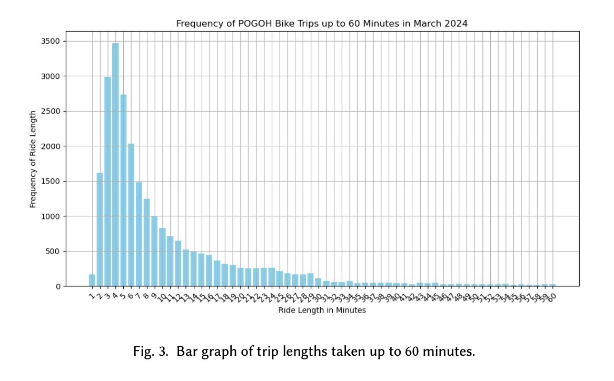
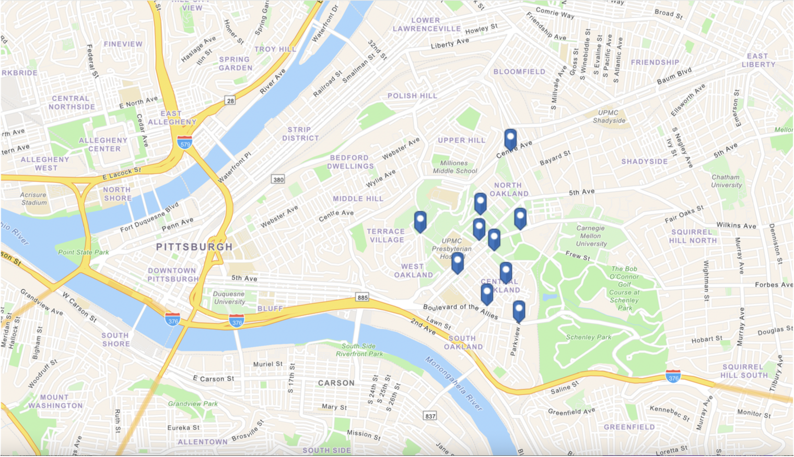

The research revealed five primary insights that highlighted both the strengths of the POGOH system and areas for UX improvement:
1. Short Trips and Micro-Commutes Dominate Usage
Analyzing ride data, I found that most trips on POGOH bikes last around five minutes. This contrasts sharply with the 30-60 minutes that a membership typically includes, suggesting a mismatch between pricing and actual user behavior. The high frequency of “micro-commutes” — short trips between university buildings, transit stations, and shopping centers — indicates that users are primarily leveraging POGOH for very short, point-to-point journeys.
Recommendation: A pricing model tailored to short, frequent trips could encourage more usage among students and commuters. For instance, offering reduced-cost “micro-commute” plans would align more closely with user behavior.

2. Availability Affects Trust in the System
In interviews, participants cited inconsistent bike and docking availability as a major frustration. Many reported instances where bikes or docks were unavailable, particularly during rush hours. This lack of reliability undermines trust, as users cannot confidently plan their trips around POGOH.
Recommendation: To build trust in availability, POGOH could implement a real-time availability feature within its app. Users would be able to see available bikes and docks at their destination, making it easier to plan trips and feel secure about their transportation choice.

3. Safety Concerns Discourage Adoption
Safety emerged as a significant barrier to POGOH usage, particularly for newer or hesitant users. Participants expressed concerns about navigating busy streets with limited bike lanes and shared negative experiences with navigating certain areas of the city on a bike. This issue was especially prominent among riders unfamiliar with urban cycling.
Recommendation: Partnering with the city to improve bike-friendly infrastructure — such as protected lanes and clear signage — would make POGOH a safer, more appealing option. Additionally, offering resources like “safety tips” in the app could ease new users’ concerns and encourage more consistent ridership.
4. Sign-Up Process is Too Complex
Many participants found the sign-up process, particularly for the Mobility Justice Membership (a reduced-rate option), unnecessarily complicated. Confusion around eligibility, required documentation, and unclear instructions created friction for individuals who otherwise wanted to use POGOH but were deterred by these barriers.
Recommendation: Simplifying the sign-up process, including making eligibility requirements clearer and more accessible, could lower the threshold for entry, especially among underserved groups. Highlighting affordable membership options within the app could also encourage wider adoption.
5. Lack of Awareness and Social Perceptions
Interviews revealed that some potential users were unaware of the membership options or didn’t feel that bike-sharing was a socially viable option for them. For some, biking was associated more with recreation than with daily commuting, and they felt unsure about whether POGOH could meet their needs.
Recommendation: A targeted awareness campaign that positions POGOH as a sustainable, affordable transportation option could help shift perceptions and drive adoption. Integrating testimonials from diverse riders and emphasizing the benefits of bike-sharing could encourage hesitant users to give the system a try.